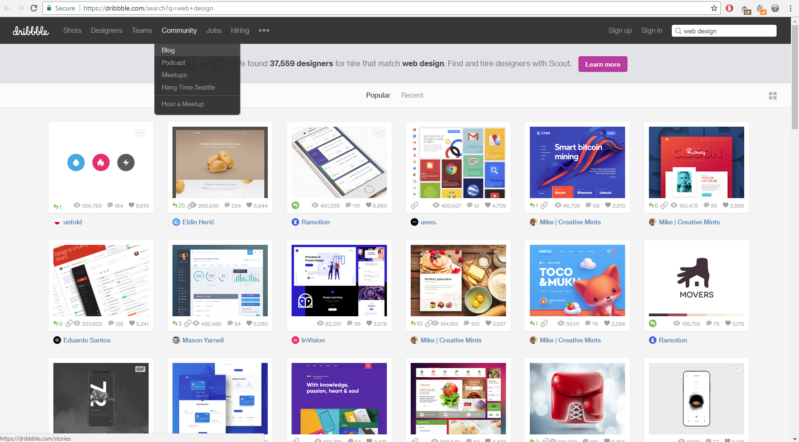

www.awwwards.com/
This Design helped influence me because it felt very modern. I liked the idea of the top bar staying on the page when you scroll down makes it much easier to access the menus.IT looks like a very clean style as well as not much of way of a background just white which i thought made it look nice this then gave me the idea of doing something similar.The colour of the text and backgrounds make it easy to read the text by using black on white backgrounds and other backgrounds like green where white was used instead.When oping it up on a mobile it fits to the screen perfectly and has no problems.

dribbble.com/search?q=web+design
This design helped me decide what sort of colours i was going to use since i like they grey with the white and had already decided that i was going to use a white background.The choice of using a slight different shade of grey for the menus seems not a good choice since i think it makes a bit harder to read especially from far away or small screen.Instead using different colour like white would make it much easier to read.When visting it on mobile it easy to use and there is no problems.